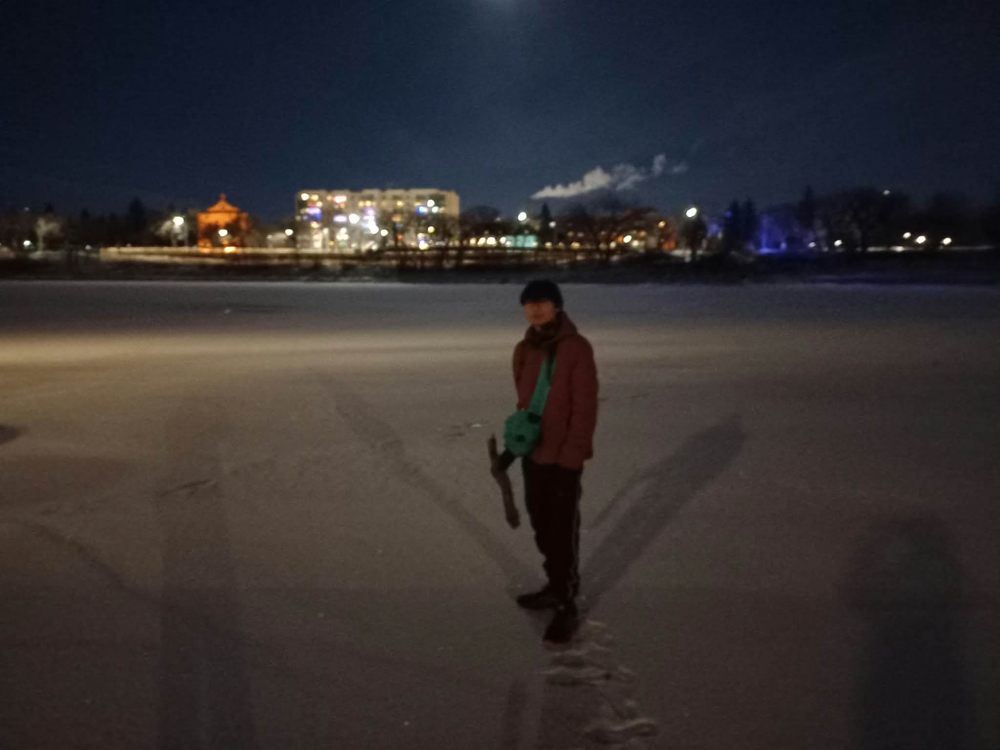
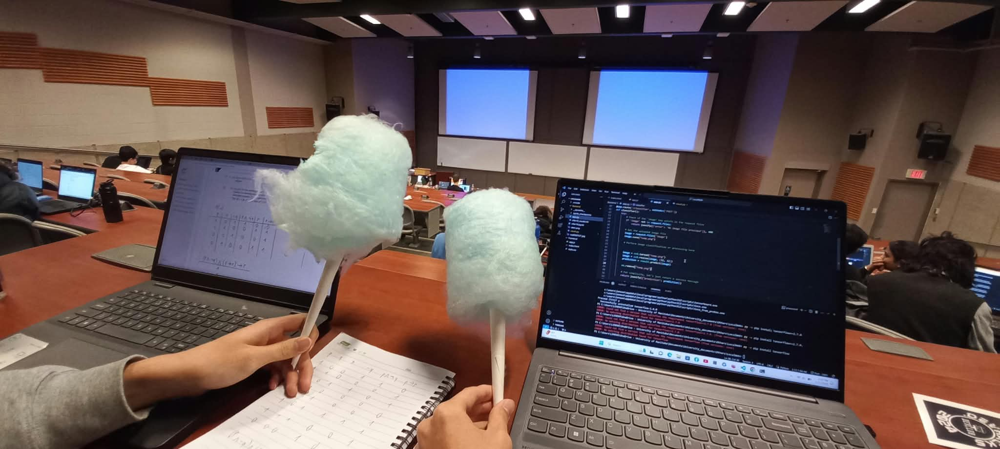
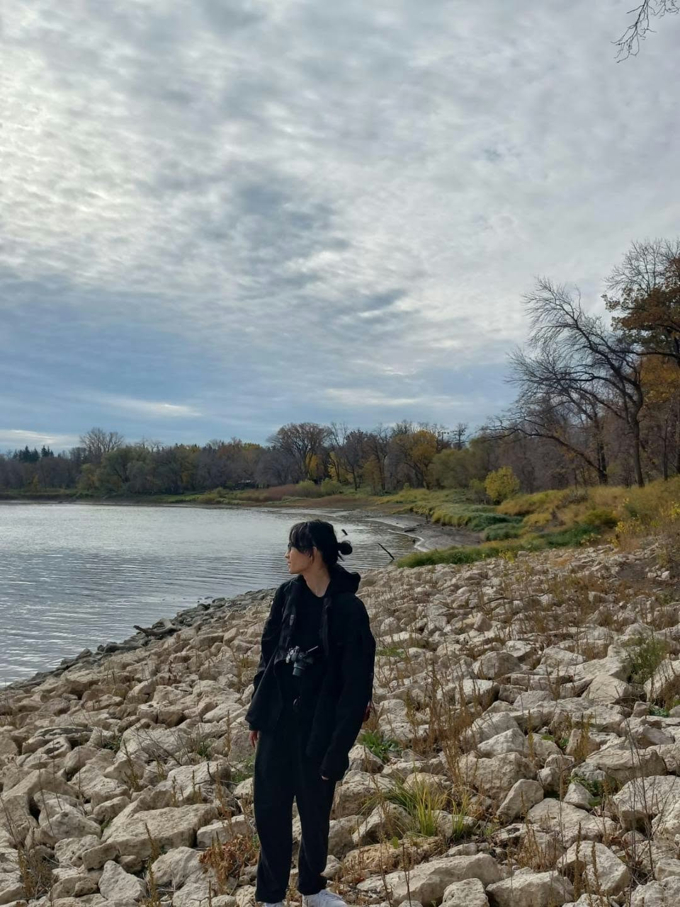

Publications & Awards
Papers
-
Cao Thien Tan, Phan Thi Thu Trang, Do Nghiem Duc, Ho Ngoc Anh, Hanyang Zhuang, Nguyen Duc Dung. 2026.
Accepted to the 43rd IEEE/CVF Conference on Computer Vision and Pattern Recognition (CVPR 2026).
Preprint: arXiv:2603.11680.
-
Duc N. Do, Minh N. Do, Dang Nguyen, et al. 2026.
Accepted to the 39th Canadian Conference on Artificial Intelligence (CAI 2026).
Preprint: arXiv:2604.23385.

Conference abstracts
-
Dang Nguyen, Khang Le, …, Duc Do, …, Jacques Kpodonu. 2026.
Tissue-Attached Motion Forecasting and Safety Projection for Latency-Tolerant Beating-Heart Robotic Surgery.
Abstract at AHA BCVS 2026.
-
Loc Nguyen, Dang Nguyen, …, Duc Do, …, Jacques Kpodonu. 2026.
Uncertainty-Aware Segmentation Preserves Cross-Vendor Cardiac MRI Function Estimates and Localizes Topology Failures.
Abstract at AHA BCVS 2026.

Awards & recognition
- 2026: Paul Dudley White International Scholar Award — Highest Ranked Abstract from Viet Nam (AHA BCVS 2026; see abstracts above).
- 2026: Faculty of Science travel funding; UMSU travel grant for conference presentation in Canada.
- 2025: Undergraduate Research Award (URA).
- 2024, 2025: International Undergraduate Student Scholarship.
- 2024, 2025: Faculty of Science Dean's Honour List.
- 2021: Valedictorian (Math, Physics, English) at Chu Van An High School, top 10 of Hanoi.
- 2021: Second prize in Physics Contest of Hanoi.
